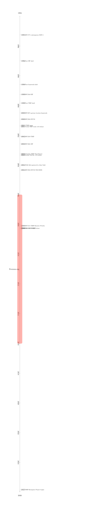
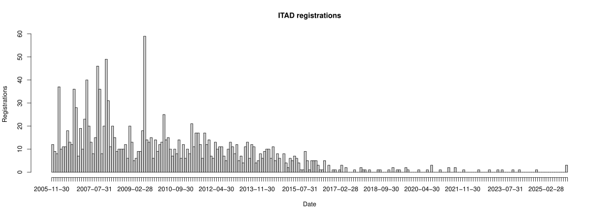

TRIP: The Untold Battle for Telephone Routing in the Internet Age
Authors: arf20, Amdaith
At the beginning, there was nothing. A world of PSTN static trunking and switching based in SS7. But thats out of scope.
A TRIP down memory lane.
Piecing together the history of Telephony Routing over IP (TRIP)
The framework was published in 2001 by Jonathan Rosenberg, who also authored the SIP protocol, and Henning Schulzrinne from Columbia University.
And the TRIP protocol in 2002 by J. Rosenberg, Dr. Hussein F. Salama, and Matt Squire.
The idea behind TRIP was how to route telephone calls over the internet by having gateways advertise which number blocks they can either serve or route calls to via another gateway. TRIP was inspired by BGP and was a nethead [12] way of thinking. However, in this case, the bellheads won - for now. We’ll come back to this later.
The framework was originally described in RFC2871 and the protocol detailed in RFC3219. Later additions to the protocol included RFC5115 and RFC5140.
Timeline

Implementations
There are five known previous implementations of TRIP.
One is part of the VOCAL project by Vovida Networks which is a complete (is it?) open source implementation developed from 2001 to 2003. An archive of the TRIP source is available at [our Github](https://github.com/TRIP-Resurgence/vovida-trip)[21] , and the complete VOCAL source version 1.5.0 which appears to be the only and latest available from archive.org[6] (1.0.0 known to exist previously). Unfortunately it wont build on modern linux, as Asterisk people tried it and failed[18] . There is a published book/manual about VOCAL[11] A Asterisk TRIP implementation never materialized. This implementation is written in C++98 and the code quality is kind of bad.
Cathay Networks Inc., a large-scale VoIP company funded in 2000 in California by Jason Fischl, provided professional support for VOCAL, went inactive in 2006. Vovida also went offline in 2007. We couldn't find a link between H. Schulzrinne and Vovida, but a possible link between J. Rosenberg and Cullen Jennings from Vovida as Rosenberg was a vicepresident of Cisco’s Collaboration Technology Group around the time Cisco aquired Vovida in 1999[14][26] .
There was a fork of the Vovida stack developed at the Columbia University (linked to H. Schulzrinne, a professor there) available (incomplete?)[23] . This implementation is referenced and documented in some Columbia pages[7][17][24] . The primary author is Eva Nautiyal and mentions the Vovida usage, and is mentioned in her mentor's blog, Kundan Singh[16] .
Whatever Cisco did, appears to be just focused on the TGREP protocol, a later addition to TRIP (RFC5140). Still supported?[22]
Two commercial implementaions or at least usages of existing implementations might have existed as mentioned in a voip-info.org article, by Acme Packet and Jasomi[15] . This article also links to a Cisco TRIP tutorial in packetizer.com[8] , together confirming that TRIP was not in widespread use.
Freenum
Freenum was a project aiming to reuse TRIP ITAD number registry at IANA for a different VoIP purposes[27][28] , as ITAD Subscriber Numbers (ISNs)[29] .
ISNs are a fast, easy and free way to have globally unique email-like numbers in the form of subscriber*ITAD, a most nethead approach to telephony. This makes them a little bit fiddly to implement in dialplans.
It was started by John Todd in 2006 who registered the first ITAD ever (256) in 2004, and from that point ITAD registrations in IANA skyrocketed by companies and individuals for a time until the project went defunct in 2016[30] . So most ITAD numbers could be atributed to this project. There were at most ~1700 freenum users at one point.
Post inquiring about the deployment of TRIP and the Freenum project from its author in 2008[19] .

On the (un)success of TRIP (Telephony Archivist)
Last night I decided to read through RFC2871 whilst thinking about why they have routing hops and to try to make sense of why TRIP was developed, and I think I have some answers.
The RFC says this in one bit:
“A gateway is a logical device which has both IP connectivity and connectivity to some other network, usually a public or private telephone network.”
Which suggests to me that they saw TRIP as providing the routing not only between IP telephones and the PSTN, but also between IP telephones and business PBXs - basically a distributed IP phone network.
It then goes on to say later:
“The model for TRIP is that of many gateways, each of which is willing to terminate calls towards some set of phone numbers. Often, this set will be based on the set of telephone numbers which are in close geographic proximity to the gateway. For example, a gateway in New York might be willing to terminate calls to the 212 and 718 area codes.”
So I think they envisioned there being TRIP gateways at every exchange/central office and at every business and a bunch of other places - so I think it was inspired by how calls are routed in the PSTN.
But it doesn’t take into account the fact that telcos have already invested a lot of capital and operational expenditure on their own switching - so why would they want to expend even more expenditure on another routing method (and one which is not exactly thoroughly specified at that - there are so many crucial parts which are stated as being not in scope for TRIP!). Also TRIP would be a threat to the telco business model because now just anybody can build out a routing network. And on top of that, why would they release control of phone number allocation as the TRIP RFC seems to imply being the future.
CTRIP
A paper proposing a TRIP equivalent for circuit switched networks was published in 2009[31] .
TRIP Resurgence
TRIP Resurgence was founded by arf20 and aims to create a modern and supported implementation of SIP, because we can.
On the (un)success of e164.arpa (Telephony Archivist)
I think telcos don’t like e164 because it makes it harder for them to charge for allocating number blocks to other providers and to bill for calls. I think they like their strictly controlled gateways so they can bill easier. I’m pretty sure I read a joke that telcos are really billing companies who reluctantly also run some networks.
There was a free hobbyst alternative zone called e164.org[32][33] .
Bibliography
- [1] RFC 1771 (1995) A Border Gateway Protocol 4 (BGP-4)
- [2] RFC 2871 (2000) A Framework for Telephony Routing over IP
- [3] RFC 3219 (2002) Telephony Routing over IP (TRIP)
- [4] RFC 5115 (2008) Telephony Routing over IP (TRIP) Attribute for Resource Priority
- [5] RFC 5140 (2008) A Telephony Gateway Registration Protocol (TGREP)
- [6] Vovida Networks (2003) VOCAL C++98 TRIP implementation, almost lost media
- [7] Columbia University TRIP implementation documentation code is lost media
- [8] Cisco (2000) TRIP Tutorial at Packetizer.com
- [9] Matthew C. Schlesener (2002) Performance Evaluation of Telephony Routing over IP (TRIP)
- [10] Nicklas Beijar (2001) TRIP, ENUM and Number Portability
- [11] David Kelly, O'Reilly (2002) Practical VoIP: Using VOCAL
- [12] Netheads vs Bellheads (1996)
- [13] Netheads vs. bellheads redux: the strange victory of SIP over the telephone network (2023)
- [14] Cullen at Cisco
- [15] Voip-info.org on TRIP
- [16] Past Projects at Columbia University
- [17] Integrating TRIP with sipd
- [18] Re: [Asterisk-Users] TRIP / RFC2871
- [19] Re: TRIP deployment?
- [20] Implementing Intelligent Network Services in VoIP Application with SIP, TRIP and ENUM
- [21] Vovida FM docs rendered to PDF
- [22] Cisco IOS Voice Command Reference
- [23] Columbia TRIP sipd
- [24] Columbia TRIP Final Report
- [25] Requesting ITAD
- [26] Cisco acquiring Vovida
- [27] Freenum.org
- [28] The Freenum/ISN Cookbook 2007-10-25
- [29] ITAD Subscriber Numbers
- [30] IANA Registry
- [31] CTRIP
- [32] Shaun Ewing on e164.org
- [33] e164.org
- [34] Vovida historic announcements
- [35] Reliable, Scalable and Interoperable Internet Telephony
- [36] H. Abdallah; B. Daniel. (2006). Implementing Intelligent Network Services in VoIP Application with SIP, TRIP and ENUM. , (), –. doi:10.1109/ICTTA.2006.1684362
- [37] Status of ENUM at asterisk
- [37] State of e164.arpa delegations
- [37] Defunct community ENUM zone